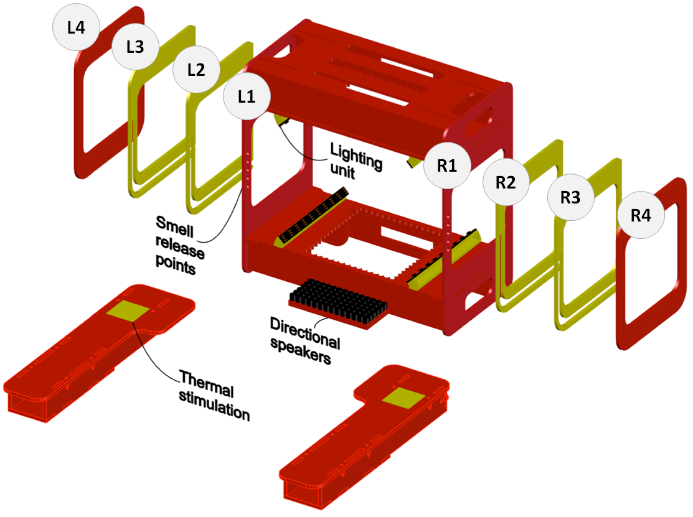
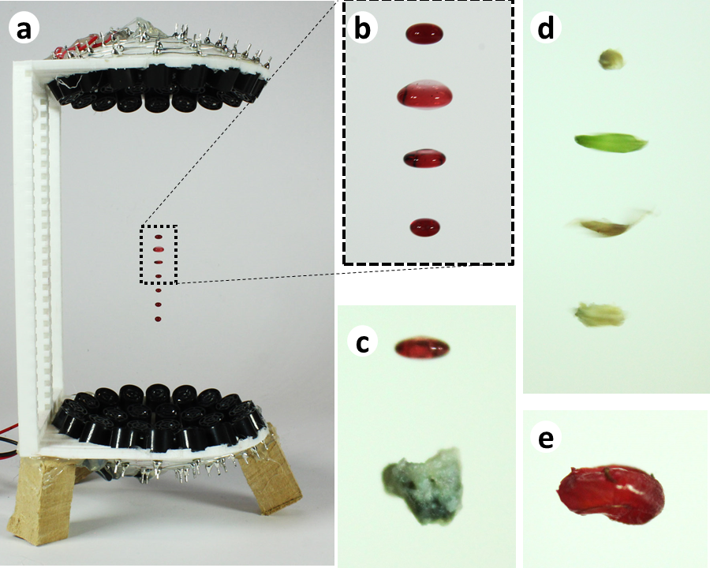
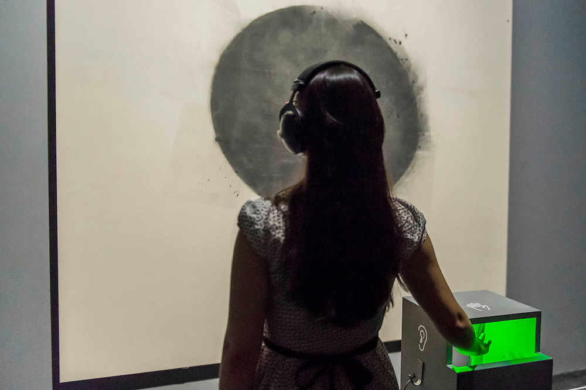
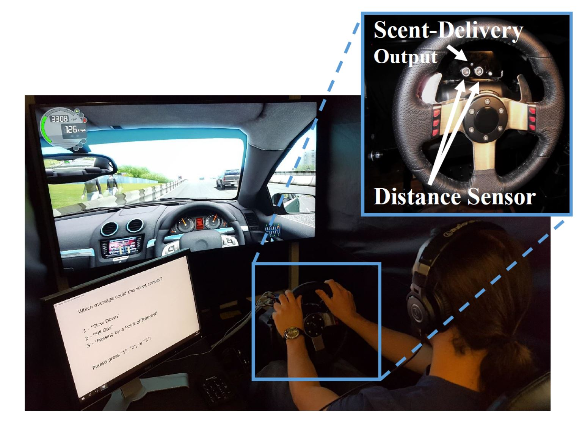
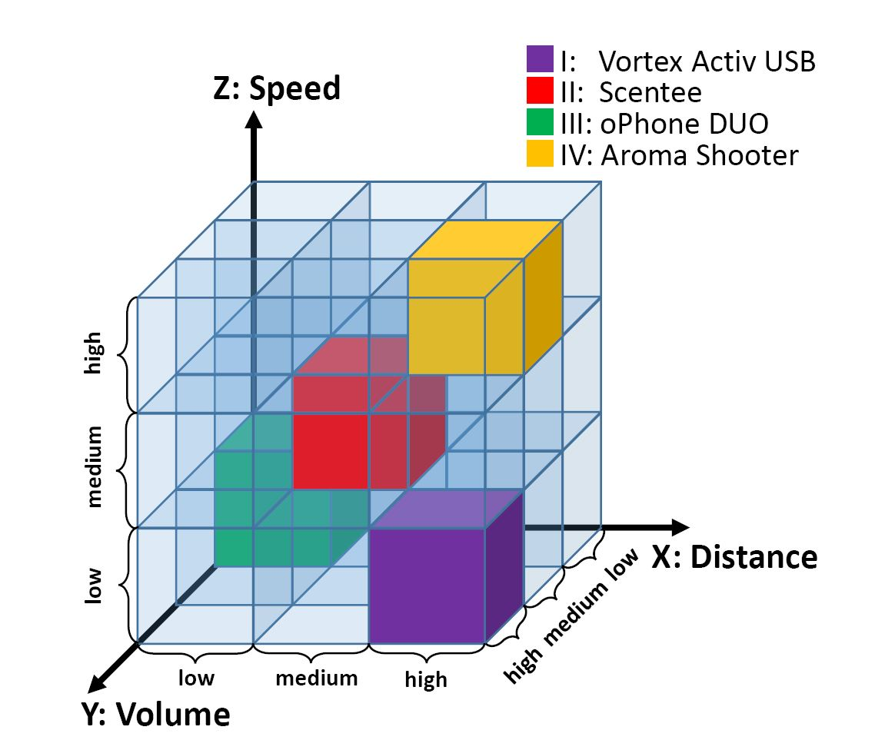
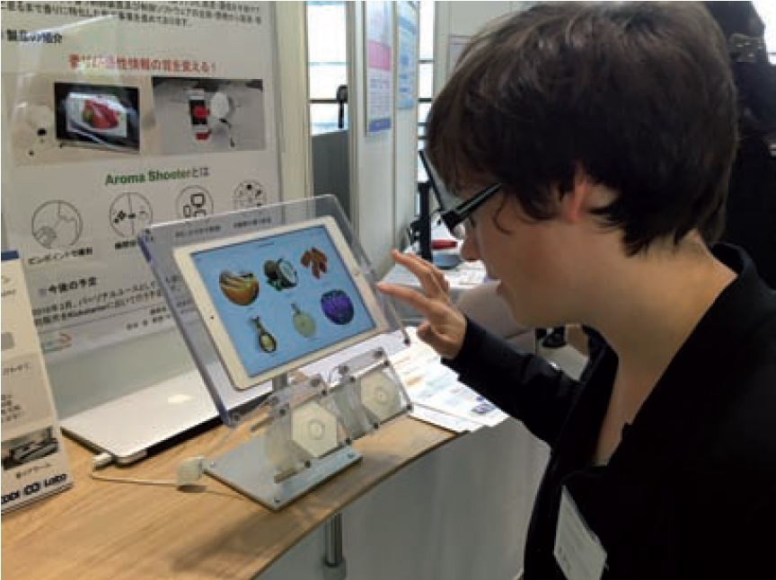

LeviSense
LeviSense is the first integrated platform to investigate multisensory experiences with
levitating food. LeviSense can control multiple morsels simultaneously in 3D enabling
the manipulation of food's trajectories. The system supports a synchronised integration
of levitated food with visual, olfactory, auditory, and tactile stimuli. The system is
capable of systematically investigating multisensory aspects around levitated food and
eating experiences.

TastyFloats
TastyFloats is a novel system that uses acoustic levitation to deliver food morsels to
the users' tongue. We first address the technical challenges to successfully levitate
and deliver different types of foods. Our user study results show that users perceive
sweet and umami easily, even in minimal quantities, whereas bitter is the least
detectable taste, despite its typical association with an unpleasant taste experience.

Tate Sensorium
We present research and design insights gained throughout an interdisciplinary
collaboration on a six-week multisensory display - Tate Sensorium - exhibited at the
Tate Britain art gallery in London, UK. This is a unique and first time case study on
how to design art experiences whilst considering all the senses (i.e., vision, sound,
touch, smell, and taste), in particular touch, which we exploited by capitalizing on a
novel haptic technology, namely, mid-air haptics.

Smell Mapping
We focus on the exploration of olfaction for in-car interaction design by establishing a
mapping between three different driving-related messages ("Slow down", "Fill gas",
"Passing by a point of interest") and four scents (lemon, lavender, peppermint, rose).
Our findings confirmed that participants expressed their mapping preferences while
performing a simulated driving task.

Scent Delivery Devices
In this paper, we propose a three-dimensional framework to compare different
scent-delivery devices based on the distance, volume, and speed of the scent-delivery.
We discuss how this initial exploration can guide the design of in-car olfactory
interfaces beyond previous work on drivers' physical and emotional state..

Multisensory
When interacting with computers, we mostly rely on vision, audition, and touch, whilst
taste and smell remain largely underexploited. It is essential to determine what
tactile, gustatory, and olfactory experiences we can design for, and how we can
meaningfully stimulate such experiences when interacting with technology. Importantly,
it is vital to understand what the limitations are that come into play when users need
to monitor more than one sense at a time.